目录
什么是扩散模型？
前向扩散过程
与随机梯度朗之万动力学的联系
反向扩散过程
L_t 的参数化与训练损失
简化
与噪声条件分数网络（NCSN）的联系
\beta_t 的参数化
反向过程方差 \boldsymbol{\Sigma}_\theta 的参数化
条件生成
分类器引导扩散
无分类器引导
加速扩散模型
减少采样步数与蒸馏
潜在变量空间
提升生成分辨率和质量
模型架构
快速总结
引用
参考文献
[2021-09-19 更新：强烈推荐阅读 Yang Song（本文参考文献中多篇关键论文的作者）撰写的这篇博文 基于分数的生成建模 ]。
[2022-08-27 更新：新增无分类器引导、GLIDE、unCLIP 和 Imagen。]
[2022-08-31 更新：新增潜在扩散模型。]
[2024-04-13 更新：新增渐进式蒸馏、一致性模型以及模型架构部分。]
目前我已经介绍过三种生成模型：从 GAN 到 WGAN 、从自编码器到 Beta-VAE 和 基于流的深度生成模型 模型。它们在生成高质量样本方面取得了巨大成功，但各自也存在一些局限性。GAN 由于其对抗训练特性，常被认为训练不稳定且生成的多样性不足。VAE 依赖于代理损失。流模型则必须使用特定架构来构造可逆变换。
扩散模型的灵感来自非平衡热力学。它定义了一个马尔可夫链，通过一系列扩散步骤逐步向数据中添加随机噪声，然后学习逆转这个扩散过程，从噪声中重建出所需的数据样本。与 VAE 或流模型不同，扩散模型使用固定的流程进行学习，其潜在变量具有很高的维度（与原始数据维度相同）。
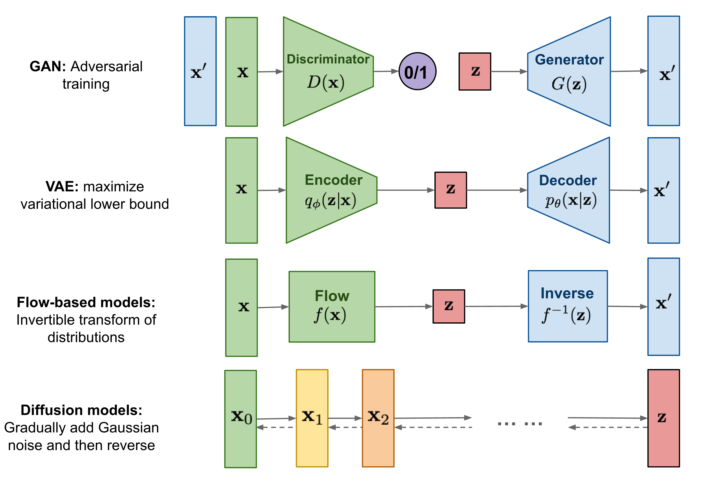
Overview of different types of generative models.
什么是扩散模型？
已经提出多种基于扩散的生成模型，它们底层思想相似，包括扩散概率模型（Sohl-Dickstein et al., 2015 ）、噪声条件分数网络（NCSN；Yang & Ermon, 2019 ）以及去噪扩散概率模型（DDPM；Ho et al. 2020 ）。
前向扩散过程
给定一个从真实数据分布 \mathbf{x}_0 \sim q(\mathbf{x}) 中采样的数据点，我们定义一个前向扩散过程：在 T 个步骤中逐步向样本添加少量高斯噪声，从而产生一系列带噪样本 \mathbf{x}_1, \dots, \mathbf{x}_T 。每一步的步长由方差调度 \{\beta_t \in (0, 1)\}_{t=1}^T 控制。
q(\mathbf{x}_t \vert \mathbf{x}_{t-1}) = \mathcal{N}(\mathbf{x}_t; \sqrt{1 - \beta_t} \mathbf{x}_{t-1}, \beta_t\mathbf{I}) \quad
q(\mathbf{x}_{1:T} \vert \mathbf{x}_0) = \prod^T_{t=1} q(\mathbf{x}_t \vert \mathbf{x}_{t-1})
随着步数 t 增大，数据样本 \mathbf{x}_0 会逐渐失去其可区分的特征。当 T \to \infty 时，\mathbf{x}_T 最终等价于各向同性的高斯分布。
The Markov chain of forward (reverse) diffusion process of generating a sample by slowly adding (removing) noise. (Image source:Ho et al. 2020with a few additional annotations)
上述过程的一个很好的性质是，我们可以使用 在任意时间步 t 以闭式形式采样 \mathbf{x}_t 。令 \alpha_t = 1 - \beta_t 和 \bar{\alpha}_t = \prod_{i=1}^t \alpha_i ：从自编码器到 Beta-VAE
\begin{aligned}
\mathbf{x}_t
&= \sqrt{\alpha_t}\mathbf{x}_{t-1} + \sqrt{1 - \alpha_t}\boldsymbol{\epsilon}_{t-1} & \text{ ;where } \boldsymbol{\epsilon}_{t-1}, \boldsymbol{\epsilon}_{t-2}, \dots \sim \mathcal{N}(\mathbf{0}, \mathbf{I}) \\
&= \sqrt{\alpha_t \alpha_{t-1}} \mathbf{x}_{t-2} + \sqrt{1 - \alpha_t \alpha_{t-1}} \bar{\boldsymbol{\epsilon}}_{t-2} & \text{ ;where } \bar{\boldsymbol{\epsilon}}_{t-2} \text{ merges two Gaussians (*).} \\
&= \dots \\
&= \sqrt{\bar{\alpha}_t}\mathbf{x}_0 + \sqrt{1 - \bar{\alpha}_t}\boldsymbol{\epsilon} \\
q(\mathbf{x}_t \vert \mathbf{x}_0) &= \mathcal{N}(\mathbf{x}_t; \sqrt{\bar{\alpha}_t} \mathbf{x}_0, (1 - \bar{\alpha}_t)\mathbf{I})
\end{aligned}
(*) 回忆一下，当我们合并两个具有不同方差的高斯分布 \mathcal{N}(\mathbf{0}, \sigma_1^2\mathbf{I}) 和 \mathcal{N}(\mathbf{0}, \sigma_2^2\mathbf{I}) 时，新的分布为 \mathcal{N}(\mathbf{0}, (\sigma_1^2 + \sigma_2^2)\mathbf{I}) 。这里合并后的标准差是 \sqrt{(1 - \alpha_t) + \alpha_t (1-\alpha_{t-1})} = \sqrt{1 - \alpha_t\alpha_{t-1}} 。
通常，当样本噪声越来越大时，我们可以采用更大的更新步长，因此 \beta_1 < \beta_2 < \dots < \beta_T ，进而 \bar{\alpha}_1 > \dots > \bar{\alpha}_T 。
与随机梯度朗之万动力学的联系
朗之万动力学是物理学中的一个概念，用于对分子系统进行统计建模。将其与随机梯度下降结合，随机梯度朗之万动力学（Welling & Teh 2011 ）可以通过仅使用梯度 \nabla_\mathbf{x} \log p(\mathbf{x}) 在马尔可夫链的更新中，从概率密度 p(\mathbf{x}) 中产生样本：
\mathbf{x}_t = \mathbf{x}_{t-1} + \frac{\delta}{2} \nabla_\mathbf{x} \log p(\mathbf{x}_{t-1}) + \sqrt{\delta} \boldsymbol{\epsilon}_t
,\quad\text{where }
\boldsymbol{\epsilon}_t \sim \mathcal{N}(\mathbf{0}, \mathbf{I})
其中 \delta 是步长。当 T \to \infty, \epsilon \to 0 时，\mathbf{x}_T 等于真实概率密度 p(\mathbf{x}) 。
与标准 SGD 相比，随机梯度朗之万动力学会在参数更新中注入高斯噪声，以避免陷入局部最优。
反向扩散过程
如果我们能逆转上述过程并从 q(\mathbf{x}_{t-1} \vert \mathbf{x}_t) 中采样，就能够从高斯噪声输入 \mathbf{x}_T \sim \mathcal{N}(\mathbf{0}, \mathbf{I}) 中重建真实样本。注意，如果 \beta_t 足够小，q(\mathbf{x}_{t-1} \vert \mathbf{x}_t) 也将是高斯分布。不幸的是，我们无法轻易估计 q(\mathbf{x}_{t-1} \vert \mathbf{x}_t) ，因为它需要使用整个数据集，因此我们需要学习一个模型 p_\theta 来逼近这些条件概率，以便运行反向扩散过程。
p_\theta(\mathbf{x}_{0:T}) = p(\mathbf{x}_T) \prod^T_{t=1} p_\theta(\mathbf{x}_{t-1} \vert \mathbf{x}_t) \quad
p_\theta(\mathbf{x}_{t-1} \vert \mathbf{x}_t) = \mathcal{N}(\mathbf{x}_{t-1}; \boldsymbol{\mu}_\theta(\mathbf{x}_t, t), \boldsymbol{\Sigma}_\theta(\mathbf{x}_t, t))
An example of training a diffusion model for modeling a 2D swiss roll data. (Image source:Sohl-Dickstein et al., 2015)
值得注意的是，当条件为 \mathbf{x}_0 时，反向条件概率是可求解的：
q(\mathbf{x}_{t-1} \vert \mathbf{x}_t, \mathbf{x}_0) = \mathcal{N}(\mathbf{x}_{t-1}; \color{blue}{\tilde{\boldsymbol{\mu}}}(\mathbf{x}_t, \mathbf{x}_0), \color{red}{\tilde{\beta}_t} \mathbf{I})
使用贝叶斯法则，我们有：
\begin{aligned}
q(\mathbf{x}_{t-1} \vert \mathbf{x}_t, \mathbf{x}_0)
&= q(\mathbf{x}_t \vert \mathbf{x}_{t-1}, \mathbf{x}_0) \frac{ q(\mathbf{x}_{t-1} \vert \mathbf{x}_0) }{ q(\mathbf{x}_t \vert \mathbf{x}_0) } \\
&\propto \exp \Big(-\frac{1}{2} \big(\frac{(\mathbf{x}_t - \sqrt{\alpha_t} \mathbf{x}_{t-1})^2}{\beta_t} + \frac{(\mathbf{x}_{t-1} - \sqrt{\bar{\alpha}_{t-1}} \mathbf{x}_0)^2}{1-\bar{\alpha}_{t-1}} - \frac{(\mathbf{x}_t - \sqrt{\bar{\alpha}_t} \mathbf{x}_0)^2}{1-\bar{\alpha}_t} \big) \Big) \\
&= \exp \Big(-\frac{1}{2} \big(\frac{\mathbf{x}_t^2 - 2\sqrt{\alpha_t} \mathbf{x}_t \color{blue}{\mathbf{x}_{t-1}} \color{black}{+ \alpha_t} \color{red}{\mathbf{x}_{t-1}^2} }{\beta_t} + \frac{ \color{red}{\mathbf{x}_{t-1}^2} \color{black}{- 2 \sqrt{\bar{\alpha}_{t-1}} \mathbf{x}_0} \color{blue}{\mathbf{x}_{t-1}} \color{black}{+ \bar{\alpha}_{t-1} \mathbf{x}_0^2} }{1-\bar{\alpha}_{t-1}} - \frac{(\mathbf{x}_t - \sqrt{\bar{\alpha}_t} \mathbf{x}_0)^2}{1-\bar{\alpha}_t} \big) \Big) \\
&= \exp\Big( -\frac{1}{2} \big( \color{red}{(\frac{\alpha_t}{\beta_t} + \frac{1}{1 - \bar{\alpha}_{t-1}})} \mathbf{x}_{t-1}^2 - \color{blue}{(\frac{2\sqrt{\alpha_t}}{\beta_t} \mathbf{x}_t + \frac{2\sqrt{\bar{\alpha}_{t-1}}}{1 - \bar{\alpha}_{t-1}} \mathbf{x}_0)} \mathbf{x}_{t-1} \color{black}{ + C(\mathbf{x}_t, \mathbf{x}_0) \big) \Big)}
\end{aligned}
其中 C(\mathbf{x}_t, \mathbf{x}_0) 是一个与 \mathbf{x}_{t-1} 无关的函数，细节已省略。按照标准高斯密度函数，均值和方差可参数化为如下形式（回忆 \alpha_t = 1 - \beta_t 和 \bar{\alpha}_t = \prod_{i=1}^t \alpha_i ）：
\begin{aligned}
\tilde{\beta}_t
&= 1/(\frac{\alpha_t}{\beta_t} + \frac{1}{1 - \bar{\alpha}_{t-1}})
= 1/(\frac{\alpha_t - \bar{\alpha}_t + \beta_t}{\beta_t(1 - \bar{\alpha}_{t-1})})
= \color{green}{\frac{1 - \bar{\alpha}_{t-1}}{1 - \bar{\alpha}_t} \cdot \beta_t} \\
\tilde{\boldsymbol{\mu}}_t (\mathbf{x}_t, \mathbf{x}_0)
&= (\frac{\sqrt{\alpha_t}}{\beta_t} \mathbf{x}_t + \frac{\sqrt{\bar{\alpha}_{t-1} }}{1 - \bar{\alpha}_{t-1}} \mathbf{x}_0)/(\frac{\alpha_t}{\beta_t} + \frac{1}{1 - \bar{\alpha}_{t-1}}) \\
&= (\frac{\sqrt{\alpha_t}}{\beta_t} \mathbf{x}_t + \frac{\sqrt{\bar{\alpha}_{t-1} }}{1 - \bar{\alpha}_{t-1}} \mathbf{x}_0) \color{green}{\frac{1 - \bar{\alpha}_{t-1}}{1 - \bar{\alpha}_t} \cdot \beta_t} \\
&= \frac{\sqrt{\alpha_t}(1 - \bar{\alpha}_{t-1})}{1 - \bar{\alpha}_t} \mathbf{x}_t + \frac{\sqrt{\bar{\alpha}_{t-1}}\beta_t}{1 - \bar{\alpha}_t} \mathbf{x}_0\\
\end{aligned}
得益于这个良好性质，我们可以表示 \mathbf{x}_0 = \frac{1}{\sqrt{\bar{\alpha}_t}}(\mathbf{x}_t - \sqrt{1 - \bar{\alpha}_t}\boldsymbol{\epsilon}_t) 并将其代入上述方程，得到：
\begin{aligned}
\tilde{\boldsymbol{\mu}}_t
&= \frac{\sqrt{\alpha_t}(1 - \bar{\alpha}_{t-1})}{1 - \bar{\alpha}_t} \mathbf{x}_t + \frac{\sqrt{\bar{\alpha}_{t-1}}\beta_t}{1 - \bar{\alpha}_t} \frac{1}{\sqrt{\bar{\alpha}_t}}(\mathbf{x}_t - \sqrt{1 - \bar{\alpha}_t}\boldsymbol{\epsilon}_t) \\
&= \color{cyan}{\frac{1}{\sqrt{\alpha_t}} \Big( \mathbf{x}_t - \frac{1 - \alpha_t}{\sqrt{1 - \bar{\alpha}_t}} \boldsymbol{\epsilon}_t \Big)}
\end{aligned}
如图 2 所示，这种设置与 从自编码器到 Beta-VAE 非常相似，因此我们可以使用变分下界来优化负对数似然。
\begin{aligned}
- \log p_\theta(\mathbf{x}_0)
&\leq - \log p_\theta(\mathbf{x}_0) + D_\text{KL}(q(\mathbf{x}_{1:T}\vert\mathbf{x}_0) \| p_\theta(\mathbf{x}_{1:T}\vert\mathbf{x}_0) ) & \small{\text{; KL is non-negative}}\\
&= - \log p_\theta(\mathbf{x}_0) + \mathbb{E}_{\mathbf{x}_{1:T}\sim q(\mathbf{x}_{1:T} \vert \mathbf{x}_0)} \Big[ \log\frac{q(\mathbf{x}_{1:T}\vert\mathbf{x}_0)}{p_\theta(\mathbf{x}_{0:T}) / p_\theta(\mathbf{x}_0)} \Big] \\
&= - \log p_\theta(\mathbf{x}_0) + \mathbb{E}_q \Big[ \log\frac{q(\mathbf{x}_{1:T}\vert\mathbf{x}_0)}{p_\theta(\mathbf{x}_{0:T})} + \log p_\theta(\mathbf{x}_0) \Big] \\
&= \mathbb{E}_q \Big[ \log \frac{q(\mathbf{x}_{1:T}\vert\mathbf{x}_0)}{p_\theta(\mathbf{x}_{0:T})} \Big] \\
\text{Let }L_\text{VLB}
&= \mathbb{E}_{q(\mathbf{x}_{0:T})} \Big[ \log \frac{q(\mathbf{x}_{1:T}\vert\mathbf{x}_0)}{p_\theta(\mathbf{x}_{0:T})} \Big] \geq - \mathbb{E}_{q(\mathbf{x}_0)} \log p_\theta(\mathbf{x}_0)
\end{aligned}
使用 Jensen 不等式也能直接得到相同结果。假设我们希望将交叉熵最小化作为学习目标，
\begin{aligned}
L_\text{CE}
&= - \mathbb{E}_{q(\mathbf{x}_0)} \log p_\theta(\mathbf{x}_0) \\
&= - \mathbb{E}_{q(\mathbf{x}_0)} \log \Big( \int p_\theta(\mathbf{x}_{0:T}) d\mathbf{x}_{1:T} \Big) \\
&= - \mathbb{E}_{q(\mathbf{x}_0)} \log \Big( \int q(\mathbf{x}_{1:T} \vert \mathbf{x}_0) \frac{p_\theta(\mathbf{x}_{0:T})}{q(\mathbf{x}_{1:T} \vert \mathbf{x}_{0})} d\mathbf{x}_{1:T} \Big) \\
&= - \mathbb{E}_{q(\mathbf{x}_0)} \log \Big( \mathbb{E}_{q(\mathbf{x}_{1:T} \vert \mathbf{x}_0)} \frac{p_\theta(\mathbf{x}_{0:T})}{q(\mathbf{x}_{1:T} \vert \mathbf{x}_{0})} \Big) \\
&\leq - \mathbb{E}_{q(\mathbf{x}_{0:T})} \log \frac{p_\theta(\mathbf{x}_{0:T})}{q(\mathbf{x}_{1:T} \vert \mathbf{x}_{0})} \\
&= \mathbb{E}_{q(\mathbf{x}_{0:T})}\Big[\log \frac{q(\mathbf{x}_{1:T} \vert \mathbf{x}_{0})}{p_\theta(\mathbf{x}_{0:T})} \Big] = L_\text{VLB}
\end{aligned}
为了使方程中的每一项都能解析计算，目标可以进一步重写为若干 KL 散度和熵项的组合（详细逐步推导见 Sohl-Dickstein et al., 2015 的附录 B）：
\begin{aligned}
L_\text{VLB}
&= \mathbb{E}_{q(\mathbf{x}_{0:T})} \Big[ \log\frac{q(\mathbf{x}_{1:T}\vert\mathbf{x}_0)}{p_\theta(\mathbf{x}_{0:T})} \Big] \\
&= \mathbb{E}_q \Big[ \log\frac{\prod_{t=1}^T q(\mathbf{x}_t\vert\mathbf{x}_{t-1})}{ p_\theta(\mathbf{x}_T) \prod_{t=1}^T p_\theta(\mathbf{x}_{t-1} \vert\mathbf{x}_t) } \Big] \\
&= \mathbb{E}_q \Big[ -\log p_\theta(\mathbf{x}_T) + \sum_{t=1}^T \log \frac{q(\mathbf{x}_t\vert\mathbf{x}_{t-1})}{p_\theta(\mathbf{x}_{t-1} \vert\mathbf{x}_t)} \Big] \\
&= \mathbb{E}_q \Big[ -\log p_\theta(\mathbf{x}_T) + \sum_{t=2}^T \log \frac{q(\mathbf{x}_t\vert\mathbf{x}_{t-1})}{p_\theta(\mathbf{x}_{t-1} \vert\mathbf{x}_t)} + \log\frac{q(\mathbf{x}_1 \vert \mathbf{x}_0)}{p_\theta(\mathbf{x}_0 \vert \mathbf{x}_1)} \Big] \\
&= \mathbb{E}_q \Big[ -\log p_\theta(\mathbf{x}_T) + \sum_{t=2}^T \log \Big( \frac{q(\mathbf{x}_{t-1} \vert \mathbf{x}_t, \mathbf{x}_0)}{p_\theta(\mathbf{x}_{t-1} \vert\mathbf{x}_t)}\cdot \frac{q(\mathbf{x}_t \vert \mathbf{x}_0)}{q(\mathbf{x}_{t-1}\vert\mathbf{x}_0)} \Big) + \log \frac{q(\mathbf{x}_1 \vert \mathbf{x}_0)}{p_\theta(\mathbf{x}_0 \vert \mathbf{x}_1)} \Big] \\
&= \mathbb{E}_q \Big[ -\log p_\theta(\mathbf{x}_T) + \sum_{t=2}^T \log \frac{q(\mathbf{x}_{t-1} \vert \mathbf{x}_t, \mathbf{x}_0)}{p_\theta(\mathbf{x}_{t-1} \vert\mathbf{x}_t)} + \sum_{t=2}^T \log \frac{q(\mathbf{x}_t \vert \mathbf{x}_0)}{q(\mathbf{x}_{t-1} \vert \mathbf{x}_0)} + \log\frac{q(\mathbf{x}_1 \vert \mathbf{x}_0)}{p_\theta(\mathbf{x}_0 \vert \mathbf{x}_1)} \Big] \\
&= \mathbb{E}_q \Big[ -\log p_\theta(\mathbf{x}_T) + \sum_{t=2}^T \log \frac{q(\mathbf{x}_{t-1} \vert \mathbf{x}_t, \mathbf{x}_0)}{p_\theta(\mathbf{x}_{t-1} \vert\mathbf{x}_t)} + \log\frac{q(\mathbf{x}_T \vert \mathbf{x}_0)}{q(\mathbf{x}_1 \vert \mathbf{x}_0)} + \log \frac{q(\mathbf{x}_1 \vert \mathbf{x}_0)}{p_\theta(\mathbf{x}_0 \vert \mathbf{x}_1)} \Big]\\
&= \mathbb{E}_q \Big[ \log\frac{q(\mathbf{x}_T \vert \mathbf{x}_0)}{p_\theta(\mathbf{x}_T)} + \sum_{t=2}^T \log \frac{q(\mathbf{x}_{t-1} \vert \mathbf{x}_t, \mathbf{x}_0)}{p_\theta(\mathbf{x}_{t-1} \vert\mathbf{x}_t)} - \log p_\theta(\mathbf{x}_0 \vert \mathbf{x}_1) \Big] \\
&= \mathbb{E}_q [\underbrace{D_\text{KL}(q(\mathbf{x}_T \vert \mathbf{x}_0) \parallel p_\theta(\mathbf{x}_T))}_{L_T} + \sum_{t=2}^T \underbrace{D_\text{KL}(q(\mathbf{x}_{t-1} \vert \mathbf{x}_t, \mathbf{x}_0) \parallel p_\theta(\mathbf{x}_{t-1} \vert\mathbf{x}_t))}_{L_{t-1}} \underbrace{- \log p_\theta(\mathbf{x}_0 \vert \mathbf{x}_1)}_{L_0} ]
\end{aligned}
我们将变分下界损失中的每个组成部分分别标记为：
\begin{aligned}
L_\text{VLB} &= L_T + L_{T-1} + \dots + L_0 \\
\text{where } L_T &= D_\text{KL}(q(\mathbf{x}_T \vert \mathbf{x}_0) \parallel p_\theta(\mathbf{x}_T)) \\
L_t &= D_\text{KL}(q(\mathbf{x}_t \vert \mathbf{x}_{t+1}, \mathbf{x}_0) \parallel p_\theta(\mathbf{x}_t \vert\mathbf{x}_{t+1})) \text{ for }1 \leq t \leq T-1 \\
L_0 &= - \log p_\theta(\mathbf{x}_0 \vert \mathbf{x}_1)
\end{aligned}
L_\text{VLB} 中的每一个 KL 项（除了 L_0 ）都在比较两个高斯分布，因此都可以用 闭式形式 计算。L_T 是常数，在训练中可以忽略，因为 q 没有可学习参数，且 \mathbf{x}_T 是高斯噪声。Ho et al. 2020 使用从 \mathcal{N}(\mathbf{x}_0; \boldsymbol{\mu}_\theta(\mathbf{x}_1, 1), \boldsymbol{\Sigma}_\theta(\mathbf{x}_1, 1)) 导出的独立离散解码器对 L_0 进行建模。
L_t 的参数化与训练损失回忆一下，我们需要学习一个神经网络来逼近反向扩散过程中的条件概率分布 p_\theta(\mathbf{x}_{t-1} \vert \mathbf{x}_t) = \mathcal{N}(\mathbf{x}_{t-1}; \boldsymbol{\mu}_\theta(\mathbf{x}_t, t), \boldsymbol{\Sigma}_\theta(\mathbf{x}_t, t)) 。我们希望训练 \boldsymbol{\mu}_\theta 来预测 \tilde{\boldsymbol{\mu}}_t = \frac{1}{\sqrt{\alpha_t}} \Big( \mathbf{x}_t - \frac{1 - \alpha_t}{\sqrt{1 - \bar{\alpha}_t}} \boldsymbol{\epsilon}_t \Big) 。由于 \mathbf{x}_t 在训练时作为输入可用，我们可以对高斯噪声项重新参数化，使其在时间步 t 从输入 \mathbf{x}_t 预测 \boldsymbol{\epsilon}_t ：
\begin{aligned}
\boldsymbol{\mu}_\theta(\mathbf{x}_t, t) &= \color{cyan}{\frac{1}{\sqrt{\alpha_t}} \Big( \mathbf{x}_t - \frac{1 - \alpha_t}{\sqrt{1 - \bar{\alpha}_t}} \boldsymbol{\epsilon}_\theta(\mathbf{x}_t, t) \Big)} \\
\text{Thus }\mathbf{x}_{t-1} &= \mathcal{N}(\mathbf{x}_{t-1}; \frac{1}{\sqrt{\alpha_t}} \Big( \mathbf{x}_t - \frac{1 - \alpha_t}{\sqrt{1 - \bar{\alpha}_t}} \boldsymbol{\epsilon}_\theta(\mathbf{x}_t, t) \Big), \boldsymbol{\Sigma}_\theta(\mathbf{x}_t, t))
\end{aligned}
损失项 L_t 被参数化以最小化与 \tilde{\boldsymbol{\mu}} 的差异：
\begin{aligned}
L_t
&= \mathbb{E}_{\mathbf{x}_0, \boldsymbol{\epsilon}} \Big[\frac{1}{2 \| \boldsymbol{\Sigma}_\theta(\mathbf{x}_t, t) \|^2_2} \| \color{blue}{\tilde{\boldsymbol{\mu}}_t(\mathbf{x}_t, \mathbf{x}_0)} - \color{green}{\boldsymbol{\mu}_\theta(\mathbf{x}_t, t)} \|^2 \Big] \\
&= \mathbb{E}_{\mathbf{x}_0, \boldsymbol{\epsilon}} \Big[\frac{1}{2 \|\boldsymbol{\Sigma}_\theta \|^2_2} \| \color{blue}{\frac{1}{\sqrt{\alpha_t}} \Big( \mathbf{x}_t - \frac{1 - \alpha_t}{\sqrt{1 - \bar{\alpha}_t}} \boldsymbol{\epsilon}_t \Big)} - \color{green}{\frac{1}{\sqrt{\alpha_t}} \Big( \mathbf{x}_t - \frac{1 - \alpha_t}{\sqrt{1 - \bar{\alpha}_t}} \boldsymbol{\boldsymbol{\epsilon}}_\theta(\mathbf{x}_t, t) \Big)} \|^2 \Big] \\
&= \mathbb{E}_{\mathbf{x}_0, \boldsymbol{\epsilon}} \Big[\frac{ (1 - \alpha_t)^2 }{2 \alpha_t (1 - \bar{\alpha}_t) \| \boldsymbol{\Sigma}_\theta \|^2_2} \|\boldsymbol{\epsilon}_t - \boldsymbol{\epsilon}_\theta(\mathbf{x}_t, t)\|^2 \Big] \\
&= \mathbb{E}_{\mathbf{x}_0, \boldsymbol{\epsilon}} \Big[\frac{ (1 - \alpha_t)^2 }{2 \alpha_t (1 - \bar{\alpha}_t) \| \boldsymbol{\Sigma}_\theta \|^2_2} \|\boldsymbol{\epsilon}_t - \boldsymbol{\epsilon}_\theta(\sqrt{\bar{\alpha}_t}\mathbf{x}_0 + \sqrt{1 - \bar{\alpha}_t}\boldsymbol{\epsilon}_t, t)\|^2 \Big]
\end{aligned}
简化
实验表明，Ho et al. (2020) 发现使用一个忽略权重项的简化目标来训练扩散模型效果更好：
\begin{aligned}
L_t^\text{simple}
&= \mathbb{E}_{t \sim [1, T], \mathbf{x}_0, \boldsymbol{\epsilon}_t} \Big[\|\boldsymbol{\epsilon}_t - \boldsymbol{\epsilon}_\theta(\mathbf{x}_t, t)\|^2 \Big] \\
&= \mathbb{E}_{t \sim [1, T], \mathbf{x}_0, \boldsymbol{\epsilon}_t} \Big[\|\boldsymbol{\epsilon}_t - \boldsymbol{\epsilon}_\theta(\sqrt{\bar{\alpha}_t}\mathbf{x}_0 + \sqrt{1 - \bar{\alpha}_t}\boldsymbol{\epsilon}_t, t)\|^2 \Big]
\end{aligned}
最终简化的目标是：
L_\text{simple} = L_t^\text{simple} + C
其中 C 是一个不依赖于 \theta 的常数。
The training and sampling algorithms in DDPM (Image source:Ho et al. 2020)
与噪声条件分数网络（NCSN）的联系
Song & Ermon (2019) 提出了一种基于分数的生成建模方法，通过使用分数匹配估计的数据分布梯度，借助朗之万动力学生成样本。每个样本 \mathbf{x} 的密度概率的分数定义为其梯度 \nabla_{\mathbf{x}} \log q(\mathbf{x}) 。分数网络 \mathbf{s}_\theta: \mathbb{R}^D \to \mathbb{R}^D 被训练来估计它，即 \mathbf{s}_\theta(\mathbf{x}) \approx \nabla_{\mathbf{x}} \log q(\mathbf{x}) 。
为了在深度学习的高维数据场景下具有可扩展性，他们提出使用去噪分数匹配（Vincent, 2011 ）或切片分数匹配（使用随机投影；Song et al., 2019 ）。去噪分数匹配会向数据 q(\tilde{\mathbf{x}} \vert \mathbf{x}) 添加一个预设的小噪声，并用分数匹配估计 q(\tilde{\mathbf{x}}) 。
回忆一下，朗之万动力学可以在迭代过程中仅使用分数 \nabla_{\mathbf{x}} \log q(\mathbf{x}) 从概率密度分布中采样数据点。
然而，根据流形假设，尽管观测数据可能看起来具有任意高的维度，但大部分数据都集中在低维流形上。这对分数估计带来了负面影响，因为数据点无法覆盖整个空间。在数据密度较低的区域，分数估计的可靠性较差。在添加小高斯噪声使扰动后的数据分布覆盖整个空间 \mathbb{R}^D 之后，分数估计器网络的训练变得更加稳定。Song & Ermon (2019) 通过使用不同水平的噪声扰动数据，并训练一个噪声条件分数网络来联合估计所有不同噪声水平下扰动数据的分数，进一步改进了这一方法。
噪声水平逐渐增加的调度与前向扩散过程相似。如果使用扩散过程的符号，分数近似于 \mathbf{s}_\theta(\mathbf{x}_t, t) \approx \nabla_{\mathbf{x}_t} \log q(\mathbf{x}_t) 。给定一个高斯分布 \mathbf{x} \sim \mathcal{N}(\mathbf{\mu}, \sigma^2 \mathbf{I}) ，我们可以将其密度函数的对数导数写成 \nabla_{\mathbf{x}}\log p(\mathbf{x}) = \nabla_{\mathbf{x}} \Big(-\frac{1}{2\sigma^2}(\mathbf{x} - \boldsymbol{\mu})^2 \Big) = - \frac{\mathbf{x} - \boldsymbol{\mu}}{\sigma^2} = - \frac{\boldsymbol{\epsilon}}{\sigma} ，其中 \boldsymbol{\epsilon} \sim \mathcal{N}(\boldsymbol{0}, \mathbf{I}) 。回忆 q(\mathbf{x}_t \vert \mathbf{x}_0) \sim \mathcal{N}(\sqrt{\bar{\alpha}_t} \mathbf{x}_0, (1 - \bar{\alpha}_t)\mathbf{I}) 因此，
\mathbf{s}_\theta(\mathbf{x}_t, t)
\approx \nabla_{\mathbf{x}_t} \log q(\mathbf{x}_t)
= \mathbb{E}_{q(\mathbf{x}_0)} [\nabla_{\mathbf{x}_t} \log q(\mathbf{x}_t \vert \mathbf{x}_0)]
= \mathbb{E}_{q(\mathbf{x}_0)} \Big[ - \frac{\boldsymbol{\epsilon}_\theta(\mathbf{x}_t, t)}{\sqrt{1 - \bar{\alpha}_t}} \Big]
= - \frac{\boldsymbol{\epsilon}_\theta(\mathbf{x}_t, t)}{\sqrt{1 - \bar{\alpha}_t}}
\beta_t 的参数化在 Ho et al. (2020) 中，前向方差被设置为从 \beta_1=10^{-4} 到 \beta_T=0.02 线性递增的常数序列。它们相对于归一化后的图像像素值（介于 [-1, 1] 之间）而言相对较小。扩散模型在其实验中能生成高质量样本，但仍无法达到其他生成模型那样有竞争力的模型对数似然。
Nichol & Dhariwal (2021) 提出了几种改进技术，帮助扩散模型获得更低的 NLL。其中一项改进是使用基于余弦的方差调度。只要调度函数能在训练过程中间提供接近线性的下降，并在 t=0 和 t=T 附近有细微变化，其选择可以是任意的。
\beta_t = \text{clip}(1-\frac{\bar{\alpha}_t}{\bar{\alpha}_{t-1}}, 0.999) \quad\bar{\alpha}_t = \frac{f(t)}{f(0)}\quad\text{where }f(t)=\cos\Big(\frac{t/T+s}{1+s}\cdot\frac{\pi}{2}\Big)^2
其中小的偏移 s 是为了防止 \beta_t 在接近 t=0 时变得过小。
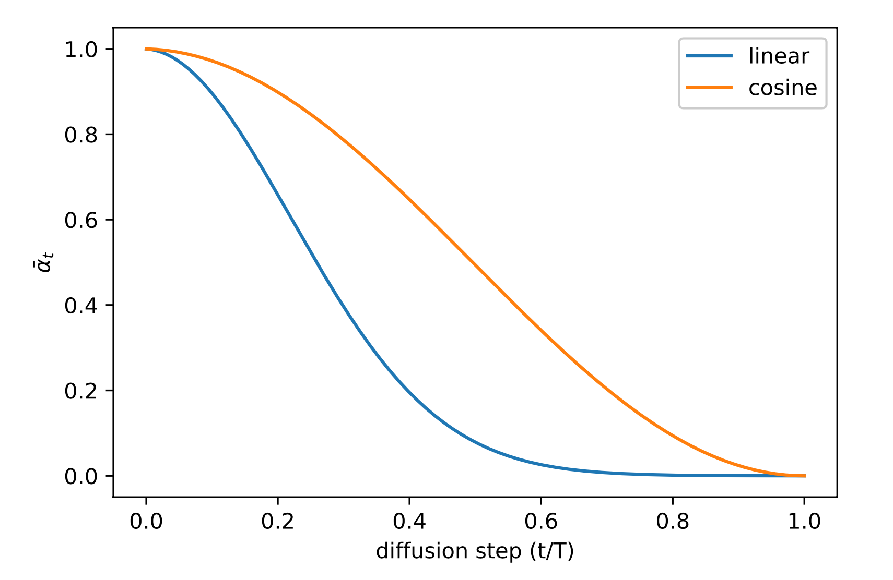
Comparison of linear and cosine-based scheduling of \beta\_t during training. (Image source:Nichol & Dhariwal, 2021)
反向过程方差 \boldsymbol{\Sigma}_\theta 的参数化
Ho et al. (2020) 选择将 \beta_t 固定为常数，而不是让其可学习，并设置 \boldsymbol{\Sigma}_\theta(\mathbf{x}_t, t) = \sigma^2_t \mathbf{I} ，其中 \sigma_t 不是学出来的，而是设为 \beta_t 或 \tilde{\beta}_t = \frac{1 - \bar{\alpha}_{t-1}}{1 - \bar{\alpha}_t} \cdot \beta_t 。因为他们发现学习对角方差 \boldsymbol{\Sigma}_\theta 会导致训练不稳定且样本质量较差。
Nichol & Dhariwal (2021) 提出让模型预测一个混合向量 \mathbf{v} ，从而将 \boldsymbol{\Sigma}_\theta(\mathbf{x}_t, t) 学习为 \beta_t 和 \tilde{\beta}_t 之间的插值：
\boldsymbol{\Sigma}_\theta(\mathbf{x}_t, t) = \exp(\mathbf{v} \log \beta_t + (1-\mathbf{v}) \log \tilde{\beta}_t)
然而，简单的目标 L_\text{simple} 并不依赖于 \boldsymbol{\Sigma}_\theta 。为了加入这种依赖性，他们构造了一个混合目标 L_\text{hybrid} = L_\text{simple} + \lambda L_\text{VLB} ，其中 \lambda=0.001 很小，并在 L_\text{VLB} 项中对 \boldsymbol{\mu}_\theta 停止梯度，使得 L_\text{VLB} 仅指导 \boldsymbol{\Sigma}_\theta 的学习。实验观察到 L_\text{VLB} 由于梯度噪声大而难以优化，因此他们提出使用重要性采样的时间平均平滑版本 L_\text{VLB} 。
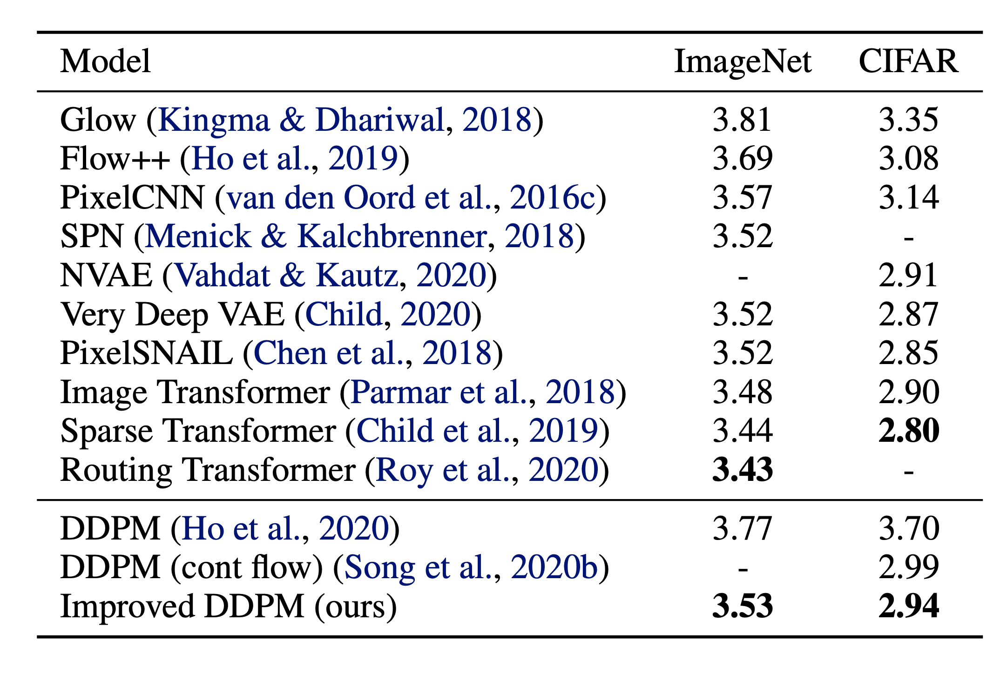
Comparison of negative log-likelihood of improved DDPM with other likelihood-based generative models. NLL is reported in the unit of bits/dim. (Image source:Nichol & Dhariwal, 2021)
条件生成
在带有条件信息（如 ImageNet 数据集）的图像上训练生成模型时，通常会根据类别标签或一段描述性文本来生成条件样本。
分类器引导扩散
为了将类别信息显式融入扩散过程，Dhariwal & Nichol (2021) 在带噪图像 \mathbf{x}_t 上训练了一个分类器 f_\phi(y \vert \mathbf{x}_t, t) ，并使用梯度 \nabla_\mathbf{x} \log f_\phi(y \vert \mathbf{x}_t) 通过改变噪声预测来引导扩散采样过程朝着条件信息 y （例如目标类别标签）的方向进行。
回忆 \nabla_{\mathbf{x}_t} \log q(\mathbf{x}_t) = - \frac{1}{\sqrt{1 - \bar{\alpha}_t}} \boldsymbol{\epsilon}_\theta(\mathbf{x}_t, t) ，我们可以将联合分布 q(\mathbf{x}_t, y) 的分数函数写为：
\begin{aligned}
\nabla_{\mathbf{x}_t} \log q(\mathbf{x}_t, y)
&= \nabla_{\mathbf{x}_t} \log q(\mathbf{x}_t) + \nabla_{\mathbf{x}_t} \log q(y \vert \mathbf{x}_t) \\
&\approx - \frac{1}{\sqrt{1 - \bar{\alpha}_t}} \boldsymbol{\epsilon}_\theta(\mathbf{x}_t, t) + \nabla_{\mathbf{x}_t} \log f_\phi(y \vert \mathbf{x}_t) \\
&= - \frac{1}{\sqrt{1 - \bar{\alpha}_t}} (\boldsymbol{\epsilon}_\theta(\mathbf{x}_t, t) - \sqrt{1 - \bar{\alpha}_t} \nabla_{\mathbf{x}_t} \log f_\phi(y \vert \mathbf{x}_t))
\end{aligned}
因此，新的分类器引导预测器 \bar{\boldsymbol{\epsilon}}_\theta 形式如下：
\bar{\boldsymbol{\epsilon}}_\theta(\mathbf{x}_t, t) = \boldsymbol{\epsilon}_\theta(x_t, t) - \sqrt{1 - \bar{\alpha}_t} \nabla_{\mathbf{x}_t} \log f_\phi(y \vert \mathbf{x}_t)
为了控制分类器引导的强度，我们可以在差分部分添加一个权重 w ：
\bar{\boldsymbol{\epsilon}}_\theta(\mathbf{x}_t, t) = \boldsymbol{\epsilon}_\theta(x_t, t) - \sqrt{1 - \bar{\alpha}_t} \; w \nabla_{\mathbf{x}_t} \log f_\phi(y \vert \mathbf{x}_t)
由此得到的消融扩散模型（ADM）和附加分类器引导的模型（ADM-G）能够取得优于 SOTA 生成模型（如 BigGAN）的结果。
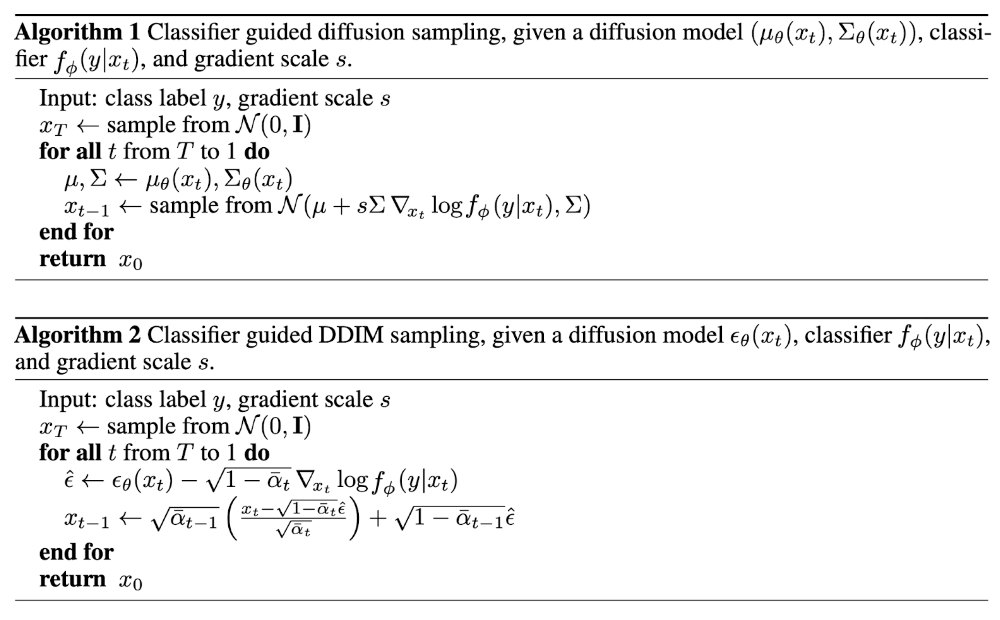
The algorithms use guidance from a classifier to run conditioned generation with DDPM and DDIM. (Image source:Dhariwal & Nichol, 2021])
此外，通过对 U-Net 架构进行一些修改，Dhariwal & Nichol (2021) 展示了扩散模型在性能上超越 GAN。架构修改包括更大的模型深度/宽度、更多注意力头、多分辨率注意力、用于上/下采样的 BigGAN 残差块、按 1/\sqrt{2} 进行残差连接缩放，以及自适应组归一化（AdaGN）。
无分类器引导
在没有独立分类器 f_\phi 的情况下，仍可以通过结合条件和无条件扩散模型的分数来运行条件扩散步骤（Ho & Salimans, 2021 ）。令无条件去噪扩散模型 p_\theta(\mathbf{x}) 通过分数估计器 \boldsymbol{\epsilon}_\theta(\mathbf{x}_t, t) 参数化，条件模型 p_\theta(\mathbf{x} \vert y) 通过 \boldsymbol{\epsilon}_\theta(\mathbf{x}_t, t, y) 参数化。这两个模型可以通过单个神经网络学习。具体来说，条件扩散模型 p_\theta(\mathbf{x} \vert y) 在成对数据 (\mathbf{x}, y) 上训练，其中条件信息 y 会周期性地随机丢弃，使模型也能知道如何无条件地生成图像，即 \boldsymbol{\epsilon}_\theta(\mathbf{x}_t, t) = \boldsymbol{\epsilon}_\theta(\mathbf{x}_t, t, y=\varnothing) 。
隐式分类器的梯度可以用条件和无条件分数估计器来表示。一旦代入分类器引导修改后的分数，该分数就不再依赖于独立的分类器。
\begin{aligned}
\nabla_{\mathbf{x}_t} \log p(y \vert \mathbf{x}_t)
&= \nabla_{\mathbf{x}_t} \log p(\mathbf{x}_t \vert y) - \nabla_{\mathbf{x}_t} \log p(\mathbf{x}_t) \\
&= - \frac{1}{\sqrt{1 - \bar{\alpha}_t}}\Big( \boldsymbol{\epsilon}_\theta(\mathbf{x}_t, t, y) - \boldsymbol{\epsilon}_\theta(\mathbf{x}_t, t) \Big) \\
\bar{\boldsymbol{\epsilon}}_\theta(\mathbf{x}_t, t, y)
&= \boldsymbol{\epsilon}_\theta(\mathbf{x}_t, t, y) - \sqrt{1 - \bar{\alpha}_t} \; w \nabla_{\mathbf{x}_t} \log p(y \vert \mathbf{x}_t) \\
&= \boldsymbol{\epsilon}_\theta(\mathbf{x}_t, t, y) + w \big(\boldsymbol{\epsilon}_\theta(\mathbf{x}_t, t, y) - \boldsymbol{\epsilon}_\theta(\mathbf{x}_t, t) \big) \\
&= (w+1) \boldsymbol{\epsilon}_\theta(\mathbf{x}_t, t, y) - w \boldsymbol{\epsilon}_\theta(\mathbf{x}_t, t)
\end{aligned}
他们的实验表明，无分类器引导能够在 FID（区分合成图像与真实图像）和 IS（质量与多样性）之间取得良好平衡。
很容易观察到，对条件模型施加权重为 w 的分类器引导，等价于对无条件模型施加权重为 w+1 的引导，因为
<div>
q(\mathbf{x}_t \vert y) q(y \vert \mathbf{x}_t)^w
\propto \frac{q(y\vert \mathbf{x}_t) q(\mathbf{x}_t)}{q(y)} q(y \vert \mathbf{x}_t)^w
\propto q(\mathbf{x}_t) q(y \vert \mathbf{x}_t)^{w+1}
</div>
因此，引导后的噪声预测可以重写为
<div>
\begin{aligned}
\bar{\boldsymbol{\epsilon}}_\theta(\mathbf{x}_t, t)
&= \boldsymbol{\epsilon}_\theta(\mathbf{x}_t, t) - \sqrt{1 - \bar{\alpha}_t} (w+1) \nabla_{x_t} \log f_\phi(y\vert \mathbf{x}_t) \\
& \approx - \sqrt{1 - \bar{\alpha}_t} \nabla_{\mathbf{x}_t} [\log p(\mathbf{x}_t) + (w+1) \log f_\phi (y \vert \mathbf{x}_t)] \\
& = - \sqrt{1 - \bar{\alpha}_t} \nabla_{\mathbf{x}_t} [\log p(\mathbf{x}_t \vert y) + w \log p_\phi (y \vert \mathbf{x}_t)]
\end{aligned}
</div>
引导扩散模型 GLIDE（Nichol, Dhariwal & Ramesh, et al. 2022 ）探索了 CLIP 引导和无分类器引导两种策略，并发现后者更受欢迎。他们推测，这是因为 CLIP 引导倾向于利用对抗样本针对 CLIP 模型本身，而不是优化生成更匹配的图像。
加速扩散模型
按照反向扩散过程的马尔可夫链从 DDPM 中生成一个样本非常慢，因为 T 可以高达一千甚至几千步。来自 Song et al. (2020) 的一个数据点：“例如，从 DDPM 中采样 5 万张 32×32 的图像大约需要 20 小时，而在 Nvidia 2080 Ti GPU 上从 GAN 生成只需不到一分钟。”
减少采样步数与蒸馏
一个简单的方法是采用跨步采样调度（Nichol & Dhariwal, 2021 ），每 \lceil T/S \rceil 步进行一次采样更新，将过程从 T 步减少到 S 步。新的生成采样调度为 \{\tau_1, \dots, \tau_S\} ，其中 \tau_1 < \tau_2 < \dots <\tau_S \in [1, T] 和 S < T 。
对于另一种方法，让我们根据良好性质将 q_\sigma(\mathbf{x}_{t-1} \vert \mathbf{x}_t, \mathbf{x}_0) 重写为由期望标准差 \sigma_t 参数化的形式：
\begin{aligned}
\mathbf{x}_{t-1}
&= \sqrt{\bar{\alpha}_{t-1}}\mathbf{x}_0 + \sqrt{1 - \bar{\alpha}_{t-1}}\boldsymbol{\epsilon}_{t-1} & \\
&= \sqrt{\bar{\alpha}_{t-1}}\mathbf{x}_0 + \sqrt{1 - \bar{\alpha}_{t-1} - \sigma_t^2} \boldsymbol{\epsilon}_t + \sigma_t\boldsymbol{\epsilon} & \\
&= \sqrt{\bar{\alpha}_{t-1}} \Big( \frac{\mathbf{x}_t - \sqrt{1 - \bar{\alpha}_t} \epsilon^{(t)}_\theta(\mathbf{x}_t)}{\sqrt{\bar{\alpha}_t}} \Big) + \sqrt{1 - \bar{\alpha}_{t-1} - \sigma_t^2} \epsilon^{(t)}_\theta(\mathbf{x}_t) + \sigma_t\boldsymbol{\epsilon} \\
q_\sigma(\mathbf{x}_{t-1} \vert \mathbf{x}_t, \mathbf{x}_0)
&= \mathcal{N}(\mathbf{x}_{t-1}; \sqrt{\bar{\alpha}_{t-1}} \Big( \frac{\mathbf{x}_t - \sqrt{1 - \bar{\alpha}_t} \epsilon^{(t)}_\theta(\mathbf{x}_t)}{\sqrt{\bar{\alpha}_t}} \Big) + \sqrt{1 - \bar{\alpha}_{t-1} - \sigma_t^2} \epsilon^{(t)}_\theta(\mathbf{x}_t), \sigma_t^2 \mathbf{I})
\end{aligned}
其中模型 \epsilon^{(t)}_\theta(.) 从 \mathbf{x}_t 预测 \epsilon_t 。
回忆在 q(\mathbf{x}_{t-1} \vert \mathbf{x}_t, \mathbf{x}_0) = \mathcal{N}(\mathbf{x}_{t-1}; \tilde{\boldsymbol{\mu}}(\mathbf{x}_t, \mathbf{x}_0), \tilde{\beta}_t \mathbf{I}) 中，因此我们有：
\tilde{\beta}_t = \sigma_t^2 = \frac{1 - \bar{\alpha}_{t-1}}{1 - \bar{\alpha}_t} \cdot \beta_t
令 \sigma_t^2 = \eta \cdot \tilde{\beta}_t ，这样我们可以将 \eta \in \mathbb{R}^+ 作为一个超参数来控制采样的随机性。当 \eta = 0 时，采样过程是确定性的。这种模型被称为去噪扩散隐式模型（DDIM；Song et al., 2020 ）。DDIM 具有相同的边缘噪声分布，但能确定性地将噪声映射回原始数据样本。
在生成过程中，我们不必遵循整个链 t=1,\dots,T ，而是采用其中的一个子集。令 s < t 表示加速轨迹中的两个步骤。DDIM 更新步骤为：
q_{\sigma, s < t}(\mathbf{x}_s \vert \mathbf{x}_t, \mathbf{x}_0)
= \mathcal{N}(\mathbf{x}_s; \sqrt{\bar{\alpha}_s} \Big( \frac{\mathbf{x}_t - \sqrt{1 - \bar{\alpha}_t} \epsilon^{(t)}_\theta(\mathbf{x}_t)}{\sqrt{\bar{\alpha}_t}} \Big) + \sqrt{1 - \bar{\alpha}_s - \sigma_t^2} \epsilon^{(t)}_\theta(\mathbf{x}_t), \sigma_t^2 \mathbf{I})
虽然所有模型在实验中都以 T=1000 个扩散步数进行训练，但他们观察到，当 S 较小时，DDIM（\eta=0 ）能产生最佳质量的样本，而 DDPM（\eta=1 ）在 S 较小时表现差得多。当我们可以承受运行完整反向马尔可夫扩散步数（S=T=1000 ）时，DDPM 的表现更好。使用 DDIM，可以将扩散模型训练到任意数量的前向步数，但在生成过程中只从其中一个子集进行采样。
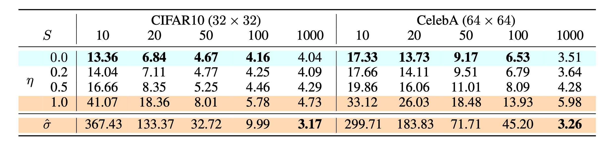
FID scores on CIFAR10 and CelebA datasets by diffusion models of different settings, including \color{cyan}{\text{DDIM}} (\eta=0 ) and \color{orange}{\text{DDPM}} (\hat{\sigma} ). (Image source:Song et al., 2020)
与 DDPM 相比，DDIM 能够：
使用少得多的步数生成更高质量的样本。
由于生成过程是确定性的，因此具有“一致性”特性，即在同一潜在变量条件下的多个样本应具有相似的高层特征。
由于这种一致性，DDIM 可以在潜在变量中进行具有语义意义的插值。
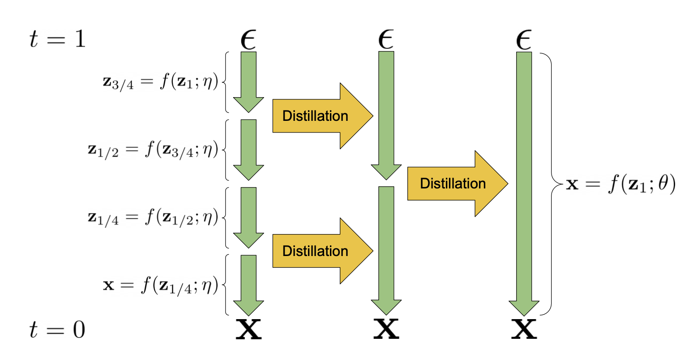
Progressive distillation can reduce the diffusion sampling steps by half in each iteration. (Image source:Salimans & Ho, 2022)
渐进式蒸馏（Salimans & Ho, 2022 ）是一种将已训练的确定性采样器蒸馏成采样步数减半的新模型的方法。学生模型从教师模型初始化，并朝着一个目标去噪，该目标是让学生的一个 DDIM 步骤匹配教师的 2 个步骤，而不是使用原始样本 \mathbf{x}_0 作为去噪目标。在每次渐进式蒸馏迭代中，我们可以将采样步数减半。
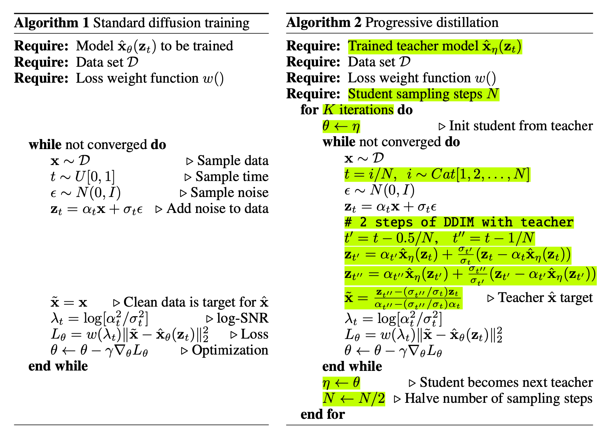
Comparison of Algorithm 1 (diffusion model training) and Algorithm 2 (progressive distillation) side-by-side, where the relative changes in progressive distillation are highlighted in green.(Image source:Salimans & Ho, 2022)
一致性模型（Song et al. 2023 ）学会将扩散采样轨迹上的任意中间带噪数据点 \mathbf{x}_t, t > 0 直接映射回其原始点 \mathbf{x}_0 。它被称为一致性模型，是因为其自一致性特性——同一轨迹上的任何数据点都会被映射到相同的原始点。
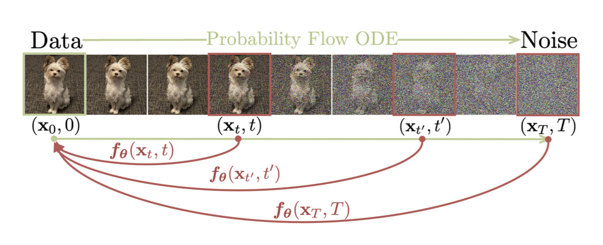
Consistency models learn to map any data point on the trajectory back to its origin. (Image source:Song et al., 2023)
给定轨迹 \{\mathbf{x}_t \vert t \in [\epsilon, T]\} ，一致性函数 f 定义为 f: (\mathbf{x}_t, t) \mapsto \mathbf{x}_\epsilon ，且方程 f(\mathbf{x}_t, t) = f(\mathbf{x}_{t’}, t’) = \mathbf{x}_\epsilon 对所有 t, t’ \in [\epsilon, T] 都成立。当 t=\epsilon 时，f 是一个恒等函数。模型可以参数化为如下形式，其中 c_\text{skip}(t) 和 c_\text{out}(t) 函数的设计使得 c_\text{skip}(\epsilon) = 1, c_\text{out}(\epsilon) = 0 ：
f_\theta(\mathbf{x}, t) = c_\text{skip}(t)\mathbf{x} + c_\text{out}(t) F_\theta(\mathbf{x}, t)
一致性模型可以在单步内生成样本，同时仍然保留通过多步采样过程用更多计算换取更好质量的灵活性。
论文介绍了两种训练一致性模型的方法：
一致性蒸馏（CD）：通过最小化来自同一轨迹的成对输出的差异，将扩散模型蒸馏为一致性模型。这使得采样评估成本大大降低。一致性蒸馏损失为：
\begin{aligned}
\mathcal{L}^N_\text{CD} (\theta, \theta^-; \phi) &= \mathbb{E}
[\lambda(t_n)d(f_\theta(\mathbf{x}_{t_{n+1}}, t_{n+1}), f_{\theta^-}(\hat{\mathbf{x}}^\phi_{t_n}, t_n)] \\
\hat{\mathbf{x}}^\phi_{t_n} &= \mathbf{x}_{t_{n+1}} - (t_n - t_{n+1}) \Phi(\mathbf{x}_{t_{n+1}}, t_{n+1}; \phi)
\end{aligned}
其中
\Phi(.;\phi) 是一个单步
ODE 求解器的更新函数；
n \sim \mathcal{U}[1, N-1] 在
1, \dots, N-1 上服从均匀分布；
网络参数
\theta^- 是
\theta 的 EMA 版本，这大大稳定了训练（就像在
强化学习简史（长文） 或
对比表示学习 对比学习中一样）；
d(.,.) 是一个正的距离度量函数，当且仅当
\mathbf{x} = \mathbf{y} 时满足
\forall \mathbf{x}, \mathbf{y}: d(\mathbf{x}, \mathbf{y}) \geq 0 和
d(\mathbf{x}, \mathbf{y}) = 0 ，例如
\ell_2 、
\ell_1 或
LPIPS （学习的感知图像块相似性）距离；
\lambda(.) \in \mathbb{R}^+ 是一个正的加权函数，论文将其设为
\lambda(t_n)=1 。
一致性训练（CT）：另一种选择是独立训练一致性模型。注意，在 CD 中，使用了预训练的分数模型
s_\phi(\mathbf{x}, t) 来逼近真实分数
\nabla\log p_t(\mathbf{x}) ，但在 CT 中我们需要一种方法来估计这个分数函数，结果发现
\nabla\log p_t(\mathbf{x}) 的无偏估计器为
-\frac{\mathbf{x}_t - \mathbf{x}}{t^2} 。CT 损失定义如下：
\mathcal{L}^N_\text{CT} (\theta, \theta^-; \phi) = \mathbb{E}
[\lambda(t_n)d(f_\theta(\mathbf{x} + t_{n+1} \mathbf{z},\;t_{n+1}), f_{\theta^-}(\mathbf{x} + t_n \mathbf{z},\;t_n)]
\text{ where }\mathbf{z} \in \mathcal{N}(\mathbf{0}, \mathbf{I})
根据论文中的实验，他们发现：
Heun ODE 求解器比 Euler 的一阶求解器效果更好，因为高阶 ODE 求解器在相同 N 下估计误差更小。
在不同的距离度量函数 d(.) 选项中，LPIPS 指标比 \ell_1 和 \ell_2 距离表现更好。
较小的 N 会导致更快收敛但样本质量较差，而较大的 N 会导致收敛更慢但收敛后的样本质量更好。
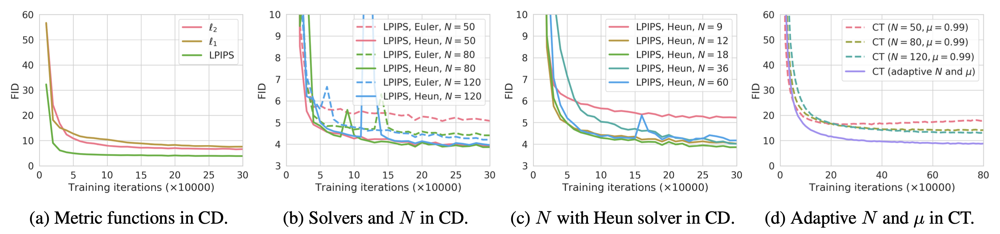
Comparison of consistency models' performance under different configurations. The best configuration for CD is LPIPS distance metric, Heun ODE solver, and N=18 . (Image source:Song et al., 2023)
潜在变量空间
潜在扩散模型（LDM；Rombach & Blattmann, et al. 2022 ）在潜在空间而非像素空间中运行扩散过程，从而降低了训练成本并加快了推理速度。这源于以下观察：图像的大部分比特用于感知细节，而语义和概念组成在经过激进压缩后仍然保留。LDM 通过首先使用自编码器去除像素级冗余，然后在学到的潜在表示上用扩散过程操纵/生成语义概念，将感知压缩和语义压缩与生成建模学习松散地解耦开来。
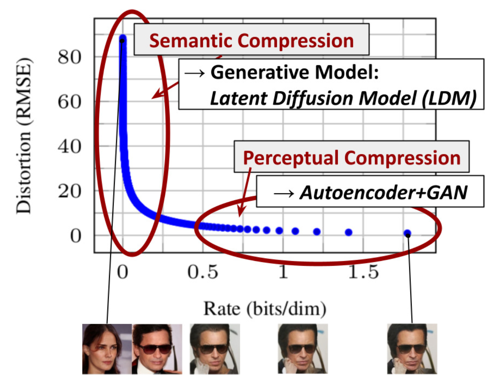
The plot for tradeoff between compression rate and distortion, illustrating two-stage compressions - perceptual and semantic compression. (Image source:Rombach & Blattmann, et al. 2022)
感知压缩过程依赖于自编码器模型。编码器 \mathcal{E} 用于将输入图像 \mathbf{x} \in \mathbb{R}^{H \times W \times 3} 压缩为更小的 2D 潜在向量 \mathbf{z} = \mathcal{E}(\mathbf{x}) \in \mathbb{R}^{h \times w \times c} ，其中下采样率 f=H/h=W/w=2^m, m \in \mathbb{N} 。然后解码器 \mathcal{D} 从潜在向量 \tilde{\mathbf{x}} = \mathcal{D}(\mathbf{z}) 重建图像。论文在自编码器训练中探索了两种正则化方法，以避免潜在空间中出现任意的高方差。
KL-reg：对学到的潜在表示施加一个小的 KL 惩罚，使其接近标准正态分布，类似于
从自编码器到 Beta-VAE 。
VQ-reg：在解码器内使用向量量化层，类似于
从自编码器到 Beta-VAE ，但量化层被解码器吸收。
扩散和去噪过程发生在潜在向量 \mathbf{z} 上。去噪模型是一个时间条件的 U-Net，并通过交叉注意力机制进行增强，以处理图像生成中灵活的条件信息（例如类别标签、语义图、图像的模糊变体）。这种设计等价于通过交叉注意力机制将不同模态的表示融合到模型中。每种条件信息都与一个特定领域的编码器 \tau_\theta 配对，将条件输入 y 投影到一个中间表示，该表示可以映射到交叉注意力组件 \tau_\theta(y) \in \mathbb{R}^{M \times d_\tau} 中：
\begin{aligned}
&\text{Attention}(\mathbf{Q}, \mathbf{K}, \mathbf{V}) = \text{softmax}\Big(\frac{\mathbf{Q}\mathbf{K}^\top}{\sqrt{d}}\Big) \cdot \mathbf{V} \\
&\text{where }\mathbf{Q} = \mathbf{W}^{(i)}_Q \cdot \varphi_i(\mathbf{z}_i),\;
\mathbf{K} = \mathbf{W}^{(i)}_K \cdot \tau_\theta(y),\;
\mathbf{V} = \mathbf{W}^{(i)}_V \cdot \tau_\theta(y) \\
&\text{and }
\mathbf{W}^{(i)}_Q \in \mathbb{R}^{d \times d^i_\epsilon},\;
\mathbf{W}^{(i)}_K, \mathbf{W}^{(i)}_V \in \mathbb{R}^{d \times d_\tau},\;
\varphi_i(\mathbf{z}_i) \in \mathbb{R}^{N \times d^i_\epsilon},\;
\tau_\theta(y) \in \mathbb{R}^{M \times d_\tau}
\end{aligned}
The architecture of the latent diffusion model (LDM). (Image source:Rombach & Blattmann, et al. 2022)
提升生成分辨率和质量
为了生成高分辨率的高质量图像，Ho et al. (2021) 提出使用由多个分辨率逐渐增加的扩散模型组成的流水线。流水线模型之间的噪声条件增强对最终图像质量至关重要，即对每个超分辨率模型 p_\theta(\mathbf{x} \vert \mathbf{z}) 的条件输入 \mathbf{z} 应用强数据增强。条件噪声有助于减少流水线设置中的累积误差。在高分辨率图像生成的扩散建模中，U-Net 是常用的模型架构选择。
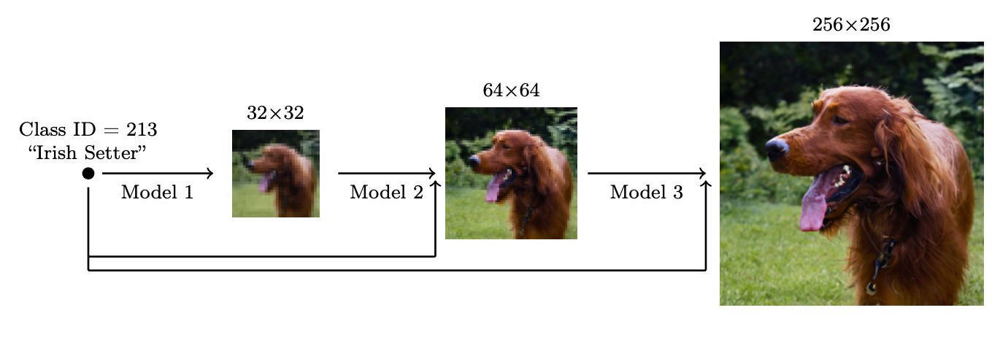
A cascaded pipeline of multiple diffusion models at increasing resolutions. (Image source:Ho et al. 2021])
他们发现最有效的噪声是在低分辨率下施加高斯噪声，在高分辨率下施加高斯模糊。此外，他们还探索了两种只需要对训练过程进行少量修改的条件增强形式。请注意，条件噪声仅在训练时应用，在推理时不使用。
截断条件增强在低分辨率下提前将扩散过程停止在步骤 t > 0 。
非截断条件增强运行完整的低分辨率反向过程直到步骤 0，然后用 \mathbf{z}_t \sim q(\mathbf{x}_t \vert \mathbf{x}_0) 进行破坏，并将破坏后的 \mathbf{z}_t 输入到超分辨率模型中。
两阶段扩散模型 unCLIP（Ramesh et al. 2022 ）大量利用 CLIP 文本编码器来生成高质量的文本引导图像。给定一个预训练的 CLIP 模型 \mathbf{c} 和用于扩散模型的成对训练数据 (\mathbf{x}, y) ，其中 x 是图像，y 是对应的标题，我们可以分别计算 CLIP 文本和图像嵌入 \mathbf{c}^t(y) 和 \mathbf{c}^i(\mathbf{x}) 。unCLIP 并行学习两个模型：
先验模型 P(\mathbf{c}^i \vert y) ：给定文本 y ，输出 CLIP 图像嵌入 \mathbf{c}^i 。
解码器 P(\mathbf{x} \vert \mathbf{c}^i, [y]) ：给定 CLIP 图像嵌入 \mathbf{c}^i 和可选的原始文本 y ，生成图像 \mathbf{x} 。
这两个模型实现了条件生成，因为
\underbrace{P(\mathbf{x} \vert y) = P(\mathbf{x}, \mathbf{c}^i \vert y)}_{\mathbf{c}^i\text{ is deterministic given }\mathbf{x}} = P(\mathbf{x} \vert \mathbf{c}^i, y)P(\mathbf{c}^i \vert y)
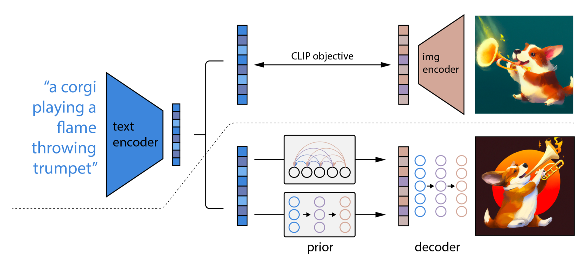
The architecture of unCLIP. (Image source:Ramesh et al. 2022])
unCLIP 遵循两阶段图像生成过程：
给定一段文本 y ，首先使用 CLIP 模型生成文本嵌入 \mathbf{c}^t(y) 。使用 CLIP 潜在空间可以通过文本实现零样本图像操作。
扩散或自回归先验 P(\mathbf{c}^i \vert y) 处理这个 CLIP 文本嵌入来构建图像先验，然后扩散解码器 P(\mathbf{x} \vert \mathbf{c}^i, [y]) 在先验条件下生成图像。该解码器也可以在图像输入条件下生成图像变体，并保留其风格和语义。
Imagen（Saharia et al. 2022 ）没有使用 CLIP 模型，而是使用预训练的大型语言模型（即冻结的 T5-XXL 文本编码器）来编码文本以进行图像生成。存在一个普遍趋势，即更大的模型规模能带来更好的图像质量和文本-图像对齐。他们发现 T5-XXL 和 CLIP 文本编码器在 MS-COCO 上取得相似性能，但在 DrawBench（涵盖 11 个类别的提示集合）上人类评估更偏好 T5-XXL。
当应用无分类器引导时，增大 w 可能会带来更好的图像-文本对齐，但图像保真度会变差。他们发现这是由于训练-测试不匹配，即因为训练数据 \mathbf{x} 保持在 [-1, 1] 范围内，测试数据也应如此。因此引入了两种阈值策略：
静态阈值：将 \mathbf{x} 预测裁剪到 [-1, 1] 。
动态阈值：在每个采样步骤中，计算 s 作为某个百分位的绝对像素值；如果 s > 1 ，则将预测裁剪到 [-s, s] 并除以 s 。
Imagen 对 U-Net 中的若干设计进行了修改，使其成为高效 U-Net。
通过为低分辨率添加更多残差块，将模型参数从高分辨率块转移到低分辨率块；
将跳跃连接按 1/\sqrt{2} 进行缩放；
反转下采样（移到卷积之前）和上采样操作（移到卷积之后）的顺序，以提高前向传播的速度。
他们发现噪声条件增强、动态阈值和高效 U-Net 对图像质量至关重要，但扩大文本编码器的规模比扩大 U-Net 的规模更重要。
模型架构
扩散模型有两种常见的骨干架构选择：U-Net 和 Transformer。
U-Net（Ronneberger, et al. 2015 ）由下采样栈和上采样栈组成。
下采样：每一步包括两次 3×3 卷积（无填充卷积）的重复应用，每次卷积后接 ReLU 和步长为 2 的 2×2 最大池化。在每个下采样步骤中，特征通道数翻倍。
上采样：每一步包括对特征图进行上采样，随后接一个 2×2 卷积，每次将特征通道数减半。
跳跃连接：跳跃连接导致与下采样栈中对应层的拼接，并为上采样过程提供必要的高分辨率特征。
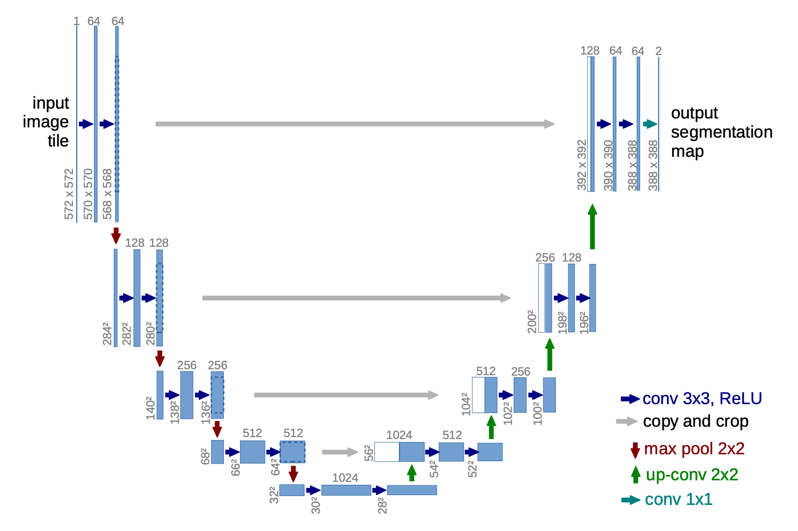
The U-net architecture. Each blue square is a feature map with the number of channels labeled on top and the height x width dimension labeled on the left bottom side. The gray arrows mark the shortcut connections. (Image source:Ronneberger, 2015)
为了实现基于额外图像（如 Canny 边缘、Hough 线、用户涂鸦、人体姿态骨架、分割图、深度和法线）的条件图像生成，ControlNet（Zhang et al. 2023 ）通过在 U-Net 的每个编码器层中添加一个“夹心”式的零卷积层（即原始模型权重的可训练副本）来进行架构修改。具体来说，给定一个神经网络块 \mathcal{F}_\theta(.) ，ControlNet 执行以下操作：
首先，冻结原始块的原始参数 \theta ；
将其克隆为一个具有可训练参数 \theta_c 的副本，并附加一个条件向量 \mathbf{c} 。
使用两个零卷积层，记为 \mathcal{Z}_{\theta_{z1}}(.;.) 和 \mathcal{Z}_{\theta_{z2}}(.;.) （权重和偏置均初始化为零的 1×1 卷积层），来连接这两个块。零卷积通过在初始训练步骤中消除随机噪声梯度来保护主干网络。
最终输出为：\mathbf{y}_c = \mathcal{F}_\theta(\mathbf{x}) + \mathcal{Z}_{\theta_{z2}}(\mathcal{F}_{\theta_c}(\mathbf{x} + \mathcal{Z}_{\theta_{z1}}(\mathbf{c})))
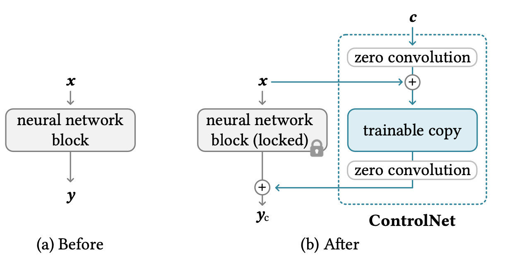
The ControlNet architecture. (Image source:Zhang et al. 2023)
扩散 Transformer（DiT；Peebles & Xie, 2023 ）用于扩散建模时操作潜在块，使用与 LDM（Latent Diffusion Model）相同的设计空间。DiT 的设置如下：
将输入 \mathbf{z} 的潜在表示作为 DiT 的输入。
将大小为 I \times I \times C 的噪声潜在“分块”成大小为 p 的块，并将其转换为大小为 (I/p)^2 的 token 序列。
然后这个 token 序列通过 Transformer 块。他们探索了三种不同的设计，用于如何根据上下文信息（如时间步 t 或类别标签 c ）进行生成。在三种设计中，adaLN（自适应层归一化）-Zero 效果最佳，优于上下文条件和交叉注意力块。缩放和偏移参数 \gamma 和 \beta 是从 t 和 c 的嵌入向量之和回归得到的。维度-wise 的缩放参数 \alpha 也被回归得到，并在 DiT 块内任何残差连接之前立即应用。
Transformer 解码器输出噪声预测和一个输出对角协方差预测。
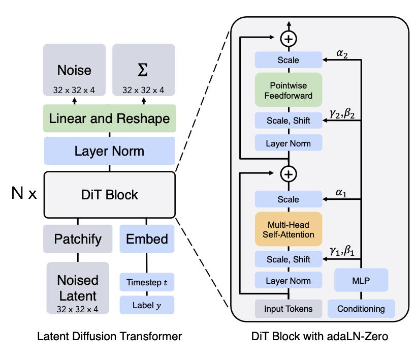
The Diffusion Transformer (DiT) architecture.(Image source:Peebles & Xie, 2023)
Transformer 架构很容易进行规模化扩展，这一点众所周知。这是 DiT 的最大优势之一，根据实验，其性能随着更多计算而扩展，且更大的 DiT 模型计算效率更高。
快速总结
优点：在生成建模中，可处理性和灵活性是两个相互冲突的目标。可处理的模型可以进行解析评估并廉价地拟合数据（例如通过高斯或拉普拉斯分布），但它们难以描述丰富数据集中的结构。灵活的模型可以拟合数据中的任意结构，但评估、训练或从中采样通常代价昂贵。扩散模型既具有解析可处理性，又具有灵活性。
缺点：扩散模型依赖于一个很长的扩散步骤马尔可夫链来生成样本，因此在时间和计算上代价较高。虽然已经提出新的方法来大幅加快这一过程，但采样速度仍比 GAN 慢。
引用
引用格式：
Weng, Lilian. (2021年7月). What are diffusion models? Lil’Log. https://lilianweng.github.io/posts/2021-07-11-diffusion-models/.
@article{weng2021diffusion,
title = "What are diffusion models?",
author = "Weng, Lilian",
journal = "lilianweng.github.io",
year = "2021",
month = "Jul",
url = "https://lilianweng.github.io/posts/2021-07-11-diffusion-models/"
}
参考文献
[1] Jascha Sohl-Dickstein et al. “Deep Unsupervised Learning using Nonequilibrium Thermodynamics.” ICML 2015。
[2] Max Welling & Yee Whye Teh. “Bayesian learning via stochastic gradient langevin dynamics.” ICML 2011。
[3] Yang Song & Stefano Ermon. “Generative modeling by estimating gradients of the data distribution.” NeurIPS 2019。
[4] Yang Song & Stefano Ermon. “Improved techniques for training score-based generative models.” NeurIPS 2020。
[5] Jonathan Ho et al. “Denoising diffusion probabilistic models.” arXiv Preprint arXiv:2006.11239 (2020)。[代码 ]
[6] Jiaming Song et al. “Denoising diffusion implicit models.” arXiv Preprint arXiv:2010.02502 (2020)。[代码 ]
[7] Alex Nichol & Prafulla Dhariwal. “Improved denoising diffusion probabilistic models” arXiv Preprint arXiv:2102.09672 (2021)。[代码 ]
[8] Prafulla Dhariwal & Alex Nichol. “Diffusion Models Beat GANs on Image Synthesis.” arXiv Preprint arXiv:2105.05233 (2021)。[代码 ]
[9] Jonathan Ho & Tim Salimans. “Classifier-Free Diffusion Guidance.” NeurIPS 2021 Workshop on Deep Generative Models and Downstream Applications。
[10] Yang Song, et al. “Score-Based Generative Modeling through Stochastic Differential Equations.” ICLR 2021。
[11] Alex Nichol, Prafulla Dhariwal & Aditya Ramesh, et al. “GLIDE: Towards Photorealistic Image Generation and Editing with Text-Guided Diffusion Models.” ICML 2022。
[12] Jonathan Ho, et al. “Cascaded diffusion models for high fidelity image generation.” J. Mach. Learn. Res. 23 (2022): 47-1。
[13] Aditya Ramesh et al. “Hierarchical Text-Conditional Image Generation with CLIP Latents.” arXiv Preprint arXiv:2204.06125 (2022)。
[14] Chitwan Saharia & William Chan, et al. “Photorealistic Text-to-Image Diffusion Models with Deep Language Understanding.” arXiv Preprint arXiv:2205.11487 (2022)。
[15] Rombach & Blattmann, et al. “High-Resolution Image Synthesis with Latent Diffusion Models.” CVPR 2022。[代码 ]
[16] Song et al. “Consistency Models” arXiv Preprint arXiv:2303.01469 (2023)
[17] Salimans & Ho. “Progressive Distillation for Fast Sampling of Diffusion Models” ICLR 2022。
[18] Ronneberger, et al. “U-Net: Convolutional Networks for Biomedical Image Segmentation” MICCAI 2015。
[19] Peebles & Xie. “Scalable diffusion models with transformers.” ICCV 2023。
[20] Zhang et al. “Adding Conditional Control to Text-to-Image Diffusion Models.” arXiv Preprint arXiv:2302.05543 (2023)。